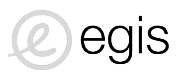
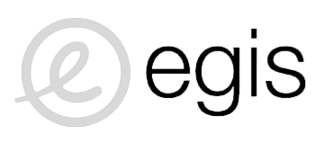
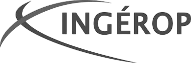
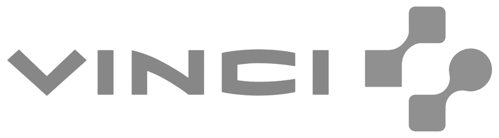
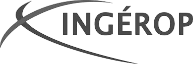
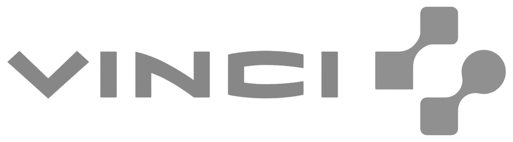

HighRing Construction
Maillon indispensable du processus, l’ingénieur construction intervient dans différentes phases de travaux, de conception et réalisation d'un projet.
Thomas Langronier, co-fondateur d'HighRing, issu d'un cursus Ingénieur en Génie Civil à l'ESITC (École supérieure d'ingénieurs des travaux de la construction, promo 2016), représentera la marque au sein de l'entreprise.
En savoir plus
Nos secteurs d'activités
Nous avons fait le choix de nous spécialiser, pour faire la différence sur le marché du recrutement. Nous travaillons dans le secteur du BTP, avec les acteurs directs (Entreprise Générale, MOE, MOA) et les acteurs indirects (ESN). Voici les secteurs privilégiés de nos clients directs :
➤ Bâtiments
Bureaux, logements, commerces, gymnases, écoles, magasins et tous types d'infrastructures
➤ Travaux Publics
Ouvrages linéaires (route, autoroute, tramway, métro, BHNS, VRD), ouvrages d’art (ponts, barrages, tunnels), et aménagements urbains
 

 


